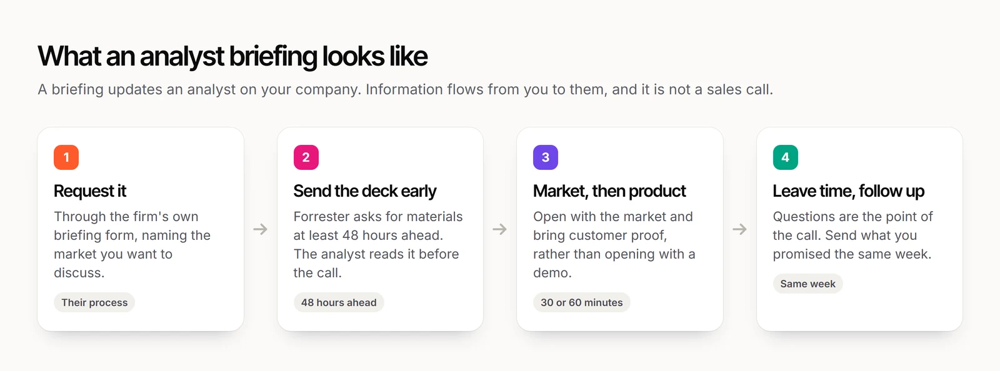

On this page
SaaS analyst relations (AR) is the work of keeping industry analysts at Gartner, Forrester and International Data Corporation (IDC) informed about your product. Analysts advise buyers on what software to buy, so AR helps them describe you correctly when a buyer asks. Paying a firm does not buy coverage, and AR is worth real money mainly when your buyers are large companies that check analyst reports before they shortlist vendors.
This guide covers who the analysts are, what they influence, what a briefing looks like, what AR costs and when it pays.
I lead brand, PR (public relations) and partnerships at Fourward. My work covers press coverage in the trade media buyers read, reviews and listings, and founder thought leadership. Every policy and price below comes from the publisher's own page, checked on 25 November 2026.
- Analyst relations is the work of briefing analysts at research firms so they understand your product and describe it correctly to buyers.
- Forrester gives a briefing either 30 or 60 minutes and asks for your slides at least 48 hours before.
- Forrester does not consider client status when it accepts a briefing, and Gartner says inclusion in its research costs nothing.
- What you pay for is advice calls and the right to quote reports. Forrester calls citing its research "a client privilege that requires approval".
- AMW (a tech PR agency) says an analyst program adds $5,000 to $15,000 a month on top of a PR retainer.
What analyst relations is
An industry analyst is a researcher at a firm that advises companies on which technology to buy. Analysts talk to buyers on paid advice calls and write reports that compare vendors in one market. Analyst relations is how a vendor makes sure those analysts have current, correct facts about it.
Analysts matter because B2B buyers rarely decide alone. Forrester's 2026 buying study says a typical buying decision includes 13 internal stakeholders and nine external influencers. An industry analyst can be one of those outside voices.
Analyst relations versus PR
- The audience is different. PR works with journalists, who write for the public. AR works with analysts, who advise buyers, often in private calls you never hear.
- The ask is different. A journalist wants news and a story. An analyst wants evidence: what the product does, who buys it and how it compares.
- The payoff is slower. An article can run within days. An analyst's view of you shows up later, in a report or in advice to a buyer.
Some agencies do both jobs. Our list of B2B PR agencies marks which ones list analyst relations as a service.
Who the analysts are
Gartner, Forrester and IDC each publish a report that compares the vendors in a market. Smaller firms cover narrower areas, sometimes in more depth. The table shows what each of the three publishes and how it handles briefing requests.
| Firm | Vendor comparison report | How to brief | Does client status matter? |
|---|---|---|---|
| Gartner | Magic Quadrant, plus Cool Vendors reports by topic | The vendor briefings page on its site | Its ombuds office, which handles complaints, says client status is irrelevant to research positioning |
| Forrester | Forrester Wave | Its analyst briefing request, 30 or 60 minutes | Not considered when it decides on a briefing request |
| IDC | IDC MarketScape | Its analyst brief request form, with three proposed dates | Requests are scheduled by analyst availability and fit with their coverage |
Smaller and specialist firms
In some categories, a specialist firm can matter more than Gartner, Forrester or IDC. RedMonk describes itself as "the developer-focused industry analyst firm", so it suits companies that sell to software developers. Constellation Research is an independent firm, and its site says it was named independent analyst firm of the year.
Finding the right analyst inside a firm
Each analyst covers a defined market, and a briefing only helps if it reaches the analyst who covers yours. Read the analyst's recent reports and check that your category appears in them. Then request the briefing through the firm's form, which routes it to the right person.
What analysts shape
Analysts influence buyers in three main ways. Each one rewards a vendor that briefs early and keeps facts current.
Comparison reports
A Magic Quadrant, a Forrester Wave and an IDC MarketScape each place the vendors in one market side by side. Buyers use them to build a shortlist. The analyst decides who is in, and opting out does not keep you out.
- Gartner: its Magic Quadrant FAQ says that if a vendor meets the inclusion criteria, "our process requires that it be represented in the Magic Quadrant".
- Forrester: the Wave methodology says the analyst creates the inclusion criteria. Participating vendors give three inputs: a questionnaire, a strategy and product demo, and reference customers.
- Forrester, if you decline: its participation policy says it can evaluate you anyway, using "primary and secondary research".
Reports on newer companies
Gartner also publishes Cool Vendors reports on one topic at a time, such as Cool Vendors in Technology Marketing. For a young SaaS company, a topic report like this can be a more realistic first goal than a full market comparison.
Advice calls with buyers
An inquiry is a call in which a paying client asks an analyst for advice, such as which vendors to shortlist. At Forrester, inquiry sessions are tied to named holders of specific licenses, according to its analyst access policy. You never hear these calls, so what the analyst says about you depends on what they already know.
The comparison report is the visible part of an analyst's influence. The private advice calls with buyers happen all year, and a briefing shapes what the analyst says in them.
What an analyst briefing looks like
A briefing is a meeting in which you update an analyst on your company. The information flows mostly from you to the analyst, and it is not a sales call. Forrester allots briefings "either 30 or 60 minutes", depending on the lead analyst's availability and research focus.

- Request it through the firm. Use the firm's briefing form and name the market you want to discuss. IDC's form asks you to "propose three dates and times" for the meeting.
- Send the deck early. Forrester asks for materials "at least 48 hours prior to the scheduled briefing". Keep the deck short, because the analyst reads it before the call.
- Open with the market, then the product. Say in one sentence what you sell and to whom. Then show what the product does differently, with a short live demo if you can.
- Bring customer proof. Name customers by type and size, and offer reference customers the analyst could speak to. Analysts trust customer evidence more than claims.
- Leave time for questions. The analyst's questions show what buyers are asking them. Write them down, because they are free market research.
- Follow up the same week. Send the slides, answer anything you could not answer live, and confirm the facts you want them to use.
What to leave out
- The sales pitch. Analysts hear many pitches, and superlatives without evidence lower your credibility.
- Anything you cannot say publicly yet, unless you have agreed in advance how the analyst may use it.
- Different numbers from the ones in your press releases and listings. Analysts compare sources, and a mismatch costs trust.
How to start analyst relations at a SaaS company
A first AR program can be small. The steps below need staff time but no subscription.
- Check whether your buyers use analysts. Ask your sales team whether prospects mention Gartner or Forrester. Check whether RFPs (requests for proposal, the formal documents large buyers send vendors) ask about analyst reports.
- Find the reports for your category. Look for the Magic Quadrant, Wave or MarketScape that covers your market, and read its inclusion criteria.
- Make a short list of analysts. Pick the analysts who write those reports, plus one specialist firm if your buyers are developers or a niche industry.
- Brief each one once. Use the steps above, then brief again when something material changes, such as a major product launch.
- Keep your facts consistent. Use the same description, pricing model and customer numbers that appear in your product listings and press materials.
- Name one owner. AR usually sits with product marketing or PR. It fails when everyone assumes someone else sends the follow-ups.
AR also fits the wider work of being described the same way everywhere, which I cover in our guide to B2B brand building.
Free check. 75 checks, one score out of 100, under a minute.
What analyst relations costs
None of the briefing pages I checked mentions a fee. The real costs are your team's time, an optional research subscription and, if you hire one, an agency.
| Cost item | What you get | Published price |
|---|---|---|
| Briefings | An analyst hears your story | No fee on the pages I checked. Gartner says inclusion in its research costs nothing. |
| Research subscription | Advice calls with analysts and access to reports | Not listed on the Gartner, Forrester and IDC pages I checked |
| Rights to quote a report | Permission to use a report or its findings in marketing | Forrester requires express written permission for any external or commercial citation |
| Agency or consultant | Planning, analyst lists, briefing prep and follow-up | AMW: $5,000 to $15,000 a month on top of PR |
| Your team's time | Prep, briefings, follow-up and report questionnaires | Internal cost only |
The agency figure comes from AMW, a tech PR agency. Its 2026 pricing page says startup PR retainers typically cost $5,000 to $15,000 a month. At those ranges, adding an analyst program can roughly double a startup PR budget.
The citation trap
A good placement is tempting to quote in ads and on your website. Forrester's citation policy calls citing its research "a client privilege that requires approval". Check each firm's citation rules before you plan a campaign around a report.
When analyst relations is worth the money
Free briefings are worth doing for almost any SaaS company with a clear category. Paid AR, meaning a subscription or an agency, depends on who your buyers are.
| Your situation | My recommendation | Why |
|---|---|---|
| Enterprise buyers ask about analyst reports in RFPs | Pay for a full program | If you are missing from a report your buyer reads, you can lose the shortlist |
| You already meet a report's inclusion criteria | Brief now, pay later if needed | Gartner must represent vendors that meet its criteria, and Forrester can evaluate you without your input |
| You sell to developers | Brief a developer-focused firm first | Specialist analysts may reach your buyers better than generalists |
| Small teams buy self-serve with a card | Free briefings only | These buyers rely on reviews and comparison pages, not analyst calls |
| You are still finding product-market fit | Wait | The product will change before any report comes out |
My advice is to start with free briefings, and to pay for a subscription or agency only when deals start to ask for analyst evidence. A paid relationship also does not buy a better position. Gartner's ombuds office says client status is irrelevant to research positioning.
Common analyst relations mistakes
- Briefing only when a report is due. By then the analyst has already formed a view from your competitors and buyers.
- Treating the briefing like a demo for a prospect. Analysts want market context and proof, not a pitch.
- Declining a report questionnaire to protect yourself. Forrester can evaluate you anyway from its own research, with less of your input.
- Quoting a report without permission. Forrester prohibits external or commercial citation without its express written permission.
- Ignoring what AI answers say about your category. Forrester's 2026 buyer study says generative AI is upending B2B buying. Track your brand mentions in AI search alongside analyst coverage.
A full SEO, AEO and GEO audit, plus 30 minutes with our team to walk you through it.
FAQs
What does analyst relations mean in SaaS?
Analyst relations is the work of briefing industry analysts at firms such as Gartner, Forrester and IDC. The goal is that they understand your product and describe it correctly in reports and in advice calls with buyers.
Do you have to pay Gartner or Forrester to brief their analysts?
No. Forrester says it does not consider client status when it accepts a briefing request. Gartner's ombuds office says inclusion in Gartner research costs nothing.
How do you get into a Gartner Magic Quadrant?
You meet the inclusion criteria the analyst sets for that market. Gartner says a vendor that meets the criteria must be represented, so the practical work is briefing the analyst early and keeping your facts current.
What is the difference between analyst relations and PR?
PR works with journalists, who write for the public and want news. Analyst relations works with analysts, who advise buyers and want evidence about the product, customers and market.
How long is an analyst briefing?
Forrester allots either 30 or 60 minutes, depending on the lead analyst's availability and research focus. It asks for your materials at least 48 hours before.
When should a SaaS startup start analyst relations?
Start with free briefings once you have a clear category and paying customers. Pay for a subscription or agency when enterprise prospects start asking about analyst reports.
Sources
- Analyst Briefings, Forrester, checked 25 November 2026.
- Forrester Methodologies: The Forrester Wave, Forrester, checked 25 November 2026.
- The Forrester Wave Vendor Participation Policy, Forrester, checked 25 November 2026.
- Citation Policy, Forrester, checked 25 November 2026.
- Analyst Access Policy, Forrester, checked 25 November 2026.
- Forrester's 2026 Buyer Insights: GenAI Is Upending B2B Buying, Forrester, 21 January 2026.
- Analyst Brief Request, IDC, checked 25 November 2026.
- IDC MarketScape: Worldwide Decision Intelligence Platforms 2026 Vendor Assessment, IDC, checked 25 November 2026.
- What does it cost to be included in Gartner research? The answer is simple: nothing., Gartner Ombuds, checked 25 November 2026.
- Gartner Client Status is Irrelevant to Research Positioning, Gartner Ombuds, checked 25 November 2026.
- Gartner Magic Quadrant FAQ, Gartner, checked 25 November 2026.
- Vendor Briefings, Gartner, checked 25 November 2026.
- Cool Vendors in Technology Marketing, Gartner, checked 25 November 2026.
- RedMonk homepage, RedMonk, checked 25 November 2026.
- Constellation Named Independent Analyst Firm of the Year, Constellation Research, checked 25 November 2026.
- How Much Does Tech PR Cost? Startup PR Pricing 2026, AMW, checked 25 November 2026.